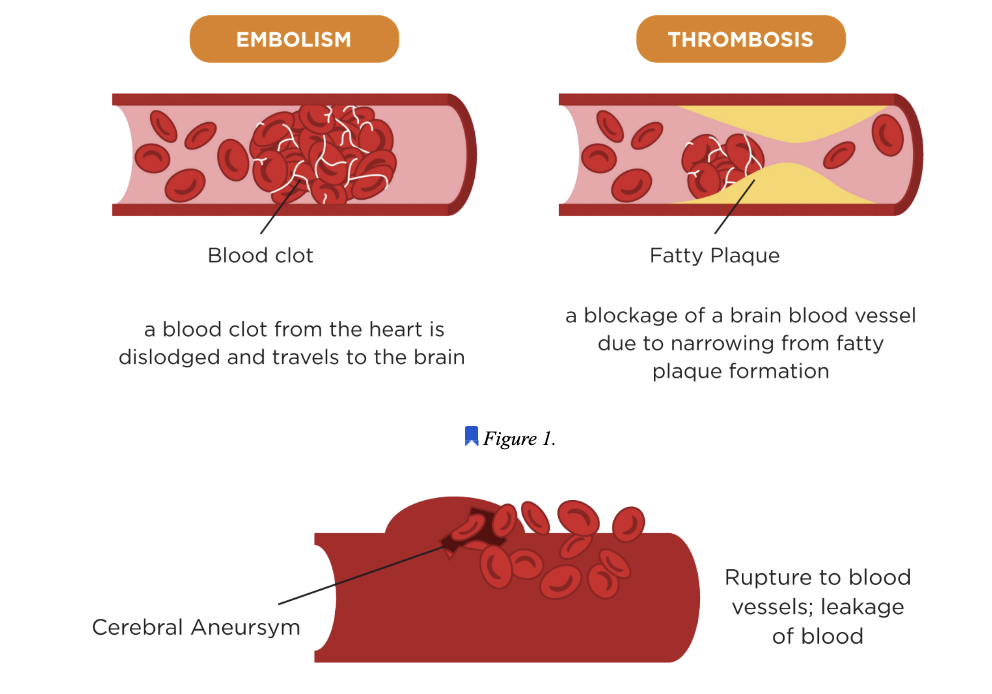
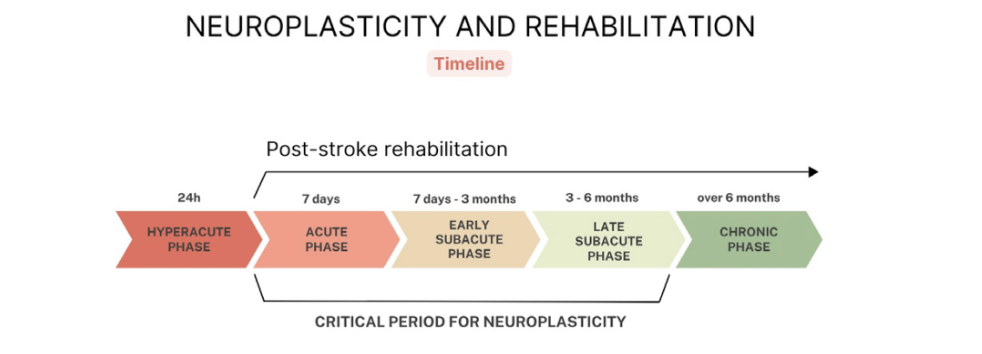

Abstract
Stroke remains a major health challenge in Singapore, ranking as the fourth leading cause of death and the seventh leading cause of adult disability (World Stroke Organisation, 2017). This project presents the development of Kinetix, a robotic rehabilitation device that integrates mechanical actuation with real-time sensor feedback for the rehabilitation of the lower limb in stroke patients.
Kinetix facilitates joint movement, monitors performance, and dynamically adapts to each patient. Its app-based interface fosters interactive engagement, enabling both patients and rehabilitation specialists to track recovery in real time. The system further incorporates adaptive control strategies and feedback mechanisms that encourage active participation, supporting a more personalised, efficient, and motivating rehabilitation experience.
1.1 Background
Types of Stroke
Strokes can be categorised into two primary types:
- Ischemic stroke — occurs when a blood vessel is blocked due to embolism or thrombosis, depriving a region of the brain of blood flow.
- Hemorrhagic stroke — involves bleeding in the brain due to a ruptured blood vessel.

Figure 1. (a) Examples of blood clots due to embolism and thrombosis. (b) Example of a ruptured blood vessel in the brain.
In both cases, strokes result in key motor, cognitive, and psychological impairment. Motor impairments, such as reduced muscle strength and disrupted inter-limb coordination, shape how patients can perform functional movements, posing a need for effective post-stroke rehabilitation.
Neuroplasticity and Rehabilitation Timeline
Post-stroke rehabilitation is most effective during the "golden time" of neuroplasticity, between seven days and six months after stroke, covering the acute to late subacute phases (Marek et al., 2024).

Figure 2. Critical Period for Neuroplasticity
1.2 Problem Statement
1.3 Project Objective
The objective of this project is to develop Kinetix, a robotic lower-limb rehabilitation system that assists stroke patients in performing controlled rehabilitation exercises while capturing quantitative biomechanical data to support therapy monitoring. The specific objectives are:
- Design a mechanical system capable of assisting controlled lower-limb movement for progressive lower limb recovery.
- Develop a sensing system to capture biomechanical parameters such as applied force and range of motion during rehabilitation exercises.
- Integrate electrical actuation and control systems to enable automated and repeatable rehabilitation movements.
- Implement a user interface to visualise rehabilitation data, support patient progress monitoring, and improve psychological state.
- Develop and evaluate a functional prototype to validate the feasibility and performance of the proposed rehabilitation system.
1.4 Value Proposition
1.5 Scope of the Project
The scope of the project includes:
- Research on stroke rehabilitation methods and limitations to contextualise the problem and develop design specifications.
- Design and fabrication of a prototype robotic rehabilitation device for lower-limb stroke therapy.
- Experimental testing to evaluate the performance of the prototype.
- Recommendations for future work to improve the prototype.
1.6 Table of Responsibilities
To support the division of workload within the scope of this project, Table 2 outlines team responsibilities by subsystem, detailing which members worked on each subsystem and describing their key activities.
- Research on stroke rehabilitation methods and limitations to contextualise the problem and develop design specifications.
- Design and fabrication of a prototype robotic rehabilitation device for lower-limb stroke therapy.
- Experimental testing to evaluate the performance of the prototype.
- Recommendations for future work to improve the prototype.
| Member | Role | Mechanical | Electrical | Sensing | Data Processing & Analysis | User Interface / Usability |
|---|---|---|---|---|---|---|
| Ron | Biomedical Engineer | Designed and iterated footrest, ankle, thigh IMU, ultrasonic, and structural components for sensor integration; assembled device | Designed electrical housing for components | Tested and iterated force sensing and positional sensing subsystem | Performed angle validation using tracker software; analysed error rate for force sensors | Developed user test protocols; tested Kinetix UI iterations with a rehabilitation specialist |
| Rizqi | Mechanical Engineer | Designed, assembled, and tested all mechanical components (mechanism) | Assisted with soldering and wiring of components | Tested positional sensing subsystem | — | — |
| Nadia | Electrical Engineer | Designed early footrest iteration | Assisted with soldering and components | Tested and iterated force sensing and positional sensing subsystem | Designed and tested BLE data pipeline | Developed Kinetix UI iterations |
| Sebastian | Electrical Engineer | Assisted in mechanical structure iteration and device assembly | Designed and developed full electronic architecture and codebase | Tested and iterated force sensing and positional sensing subsystem | Designed and tested BLE data pipeline | — |
Table 2. Table of Work Done by Project Team